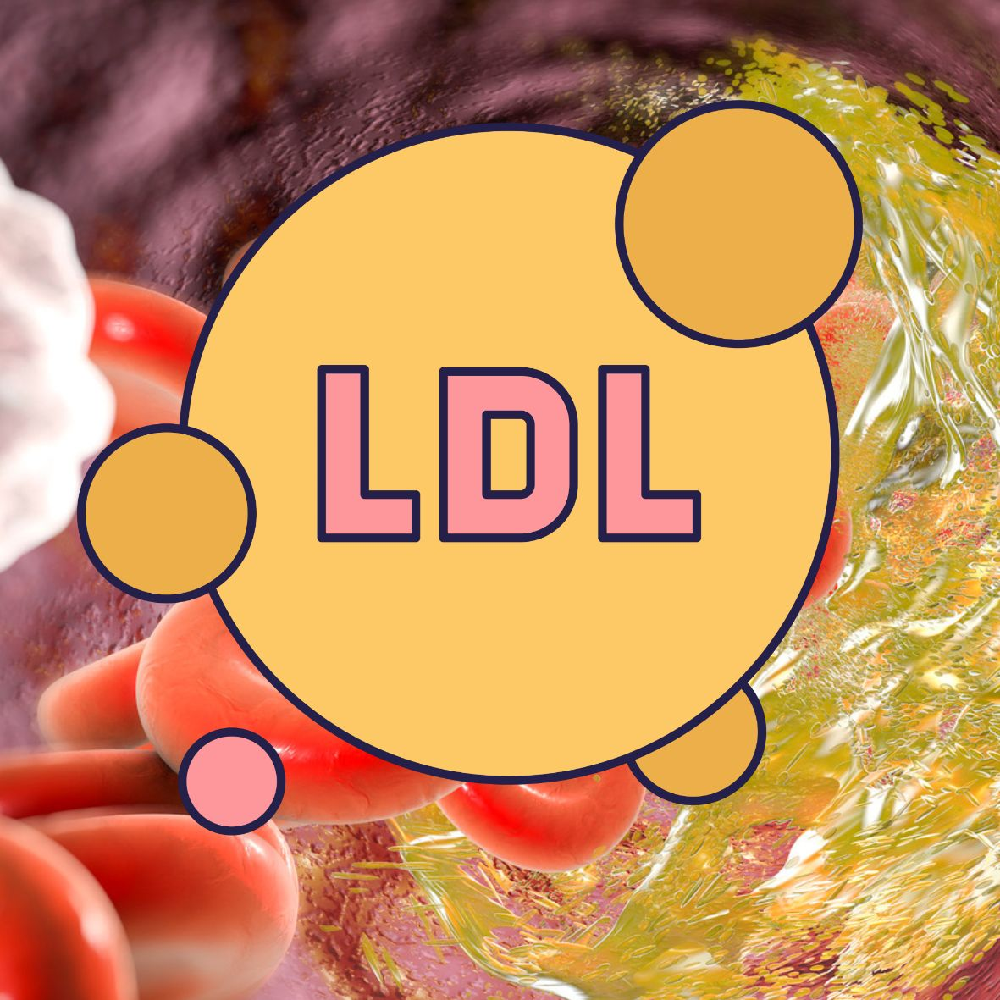

Comment faire baisser son cholestérol LDL
La plupart des personnes peuvent faire baisser nettement leur cholestérol LDL en changeant ce qu'elles mangent et leur façon de vivre. Le LDL est souvent appelé « mauvais » cholestérol car, lorsqu'il est trop abondant dans le sang, il s'accumule dans la paroi des artères. Au fil des années, cela les rétrécit et augmente le risque d'infarctus et d'AVC.
La difficulté, c'est qu'un LDL élevé ne donne aucun symptôme. On peut se sentir parfaitement bien alors qu'il fait des dégâts en silence, d'où l'importance de connaître son chiffre et d'agir.
Connaître ses chiffres
Une simple prise de sang appelée bilan lipidique mesure votre LDL ainsi que vos autres graisses sanguines. Chez la plupart des personnes, il n'est pas nécessaire d'être à jeun, mais suivez les consignes de votre médecin.
Il n'existe pas d'objectif unique pour tout le monde. Votre LDL idéal dépend de votre risque global : âge, tension artérielle, diabète, tabac, antécédents familiaux, et le fait d'avoir déjà eu un infarctus, un AVC ou un stent. Plus votre risque est élevé, plus votre LDL doit être bas. À titre indicatif, beaucoup de personnes sans autre facteur de risque visent moins de 3,0 mmol/L (environ 1,15 g/L), tandis que les personnes atteintes d'une maladie cardiaque ou d'un diabète se voient souvent conseiller un objectif bien inférieur à 1,8 mmol/L (environ 0,70 g/L), parfois encore plus bas. Demandez à votre médecin quel est votre objectif personnel.
Les maladies cardiaques et le diabète sont fréquents à Maurice : tout adulte devrait faire contrôler son cholestérol au moins une fois, et plus souvent en cas de facteurs de risque ou d'antécédents familiaux de maladie cardiaque précoce. Des taux très élevés, surtout chez un sujet jeune, peuvent être héréditaires (hypercholestérolémie familiale) et nécessitent un avis spécialisé.
Bien manger pour faire baisser le LDL
Le levier alimentaire le plus important est le type de graisse consommée. Remplacer les graisses saturées par des graisses insaturées fait baisser le LDL de façon plus fiable que supprimer les aliments contenant du cholestérol, comme les œufs. À Maurice, une grande partie des graisses saturées vient de la façon de cuisiner et de ce qui accompagne les plats, plus que d'un plat en particulier.
À limiter :
- Les fritures telles que gato piment, bajia, samoussa, boulette et poulet frit, surtout lorsque l'huile a été réutilisée de nombreuses fois
- Le farata, ainsi que le roti ou le dholl puri cuits ou badigeonnés avec beaucoup de ghee ou d'huile
- Le ghee, le beurre, la margarine, la crème, l'huile de palme et l'huile de coco, et les currys riches en crème ou en lait de coco
- Les saucisses, le salami, le chorizo, le corned-beef, les morceaux gras de mouton et de bœuf, et la peau du poulet
- Les gâteaux, pâtisseries, croissants et biscuits industriels, qui contiennent souvent de l'huile de palme, de la margarine ou des graisses trans
À privilégier :
- Le dholl, le gram (pois chiche), le haricot rouge, le pois du cap et les autres légumineuses. Leurs fibres solubles aident l'organisme à éliminer le cholestérol. À consommer presque tous les jours.
- Les brèdes, le chouchou, la bringelle, le lalo (gombo), les tomates et les autres légumes, cuisinés avec peu d'huile. La bringelle et le lalo sont aussi riches en fibres solubles.
- Les fruits locaux comme la goyave, la papaye, l'orange et la pomme
- L'avoine, le riz complet, l'orge et le pain ou le roti complet à la place du pain blanc et de la farine raffinée
- Le poisson comme la sardine, le maquereau et le thon, grillé, cuit à la vapeur ou en rougaille légère, environ deux fois par semaine
- Une petite poignée de cacahuètes non salées, d'amandes ou de noix par jour
- L'huile de soja, de tournesol, de colza ou d'olive, mesurée à la cuillère plutôt que versée, à la place du ghee, du beurre et des graisses solides
Quelques règles simples en cuisine : griller, cuire à la vapeur, au four ou mijoter plutôt que frire, retirer le gras visible et la peau du poulet, et remplir la moitié de l'assiette de légumes. Les changements alimentaires seuls peuvent souvent faire baisser le LDL d'environ 10 à 15 %, davantage chez ceux qui changent beaucoup leurs habitudes (valeur approximative).
Les habitudes de vie qui aident
L'alimentation fait l'essentiel du travail sur le LDL lui-même, mais d'autres habitudes protègent votre cœur et soutiennent vos résultats.
- Bouger davantage. Visez au moins 150 minutes par semaine d'activité modérée, comme une marche rapide aux heures fraîches du matin ou du soir, le vélo, la natation ou la danse. L'exercice a un effet direct modeste sur le LDL, mais il aide à contrôler le poids et protège le cœur en général.
- Perdre l'excès de poids. Même une perte de 5 à 10 % peut améliorer votre bilan lipidique et votre tension.
- Arrêter de fumer. Le tabac n'augmente pas beaucoup le LDL, mais il abîme la paroi des artères et rend le LDL plus nocif. Arrêter est l'une des meilleures choses que vous puissiez faire pour votre cœur.
- Limiter l'alcool. Une consommation importante augmente la tension et apporte des calories vides. Si vous buvez, restez modéré.
- Prendre en charge les autres maladies. Contrôler la tension et la glycémie diminue votre risque global, ce qui est finalement ce qui compte.
Quand consulter
Prenez rendez-vous pour un bilan et un dosage des lipides si vous n'en avez pas fait, ou si l'une des situations suivantes vous concerne :
- Vous avez un diabète, une hypertension, une maladie rénale ou vous fumez
- Un proche parent a eu un infarctus ou un AVC jeune (avant environ 55 ans chez l'homme, 65 ans chez la femme)
- Votre LDL est très élevé, ou on vous a déjà dit que vous aviez du cholestérol
- Vous avez déjà eu un infarctus, un AVC, un stent ou un pontage
Consultez en urgence en cas de douleur thoracique, d'essoufflement soudain, ou de faiblesse soudaine, de bouche déviée ou de difficulté à parler. Ce ne sont pas des symptômes du cholestérol pour lesquels il faut attendre.
En résumé
- Faites mesurer votre LDL et demandez quel est votre objectif personnel.
- Remplacez les graisses saturées et les fritures par des fibres, du poisson, des noix et des huiles insaturées.
- Restez actif, atteignez un poids santé et ne fumez pas.
- Faites recontrôler votre LDL régulièrement et revoyez votre objectif avec votre médecin.
En un coup d'œil : aliments à privilégier et à limiter
| Groupe d'aliments | À privilégier | À limiter |
|---|---|---|
| Huiles et graisses de cuisson | Huile de soja, de tournesol, de colza ou d'olive en petites quantités mesurées ; grillades, cuisson à la vapeur et au four | Ghee, beurre, margarine, huile de palme, huile de coco ; huile réutilisée pour la friture |
| Viandes, poissons et œufs | Sardine, maquereau et thon environ deux fois par semaine ; poulet sans peau ; œufs avec modération | Saucisses, salami, chorizo, corned-beef, mouton et bœuf gras, peau du poulet, poulet frit |
| Légumineuses, légumes et fruits | Dholl, gram, haricot rouge, pois du cap ; brèdes, chouchou, bringelle, lalo, tomates ; goyave, papaye, orange, pomme | Currys riches en crème ou en lait de coco ; légumes cuisinés avec beaucoup d'huile |
| Riz, pain et céréales | Avoine, riz complet, orge, pain ou roti complet | Farata, roti ou dholl puri préparés avec beaucoup de ghee ou d'huile ; croissants et pâtisseries ; pain blanc avec beurre ou margarine |
| Collations | Cacahuètes non salées, amandes ou noix (une petite poignée) ; fruits frais | Gato piment, bajia, samoussa, boulette, chips, gâteaux, biscuits industriels |
| Produits laitiers | Lait écrémé ou demi-écrémé et yaourt nature | Crème, fromage entier, lait entier, glace |
Une question sur votre cholestérol ou votre risque cardiaque ? Contactez-nous directement.
Écrire sur WhatsAppCet article fournit des informations générales sur la santé et ne remplace pas une consultation médicale. Les objectifs et le traitement dépendent de votre risque individuel : discutez-en avec votre médecin. En cas d'urgence médicale, appelez le SAMU (114) ou rendez-vous à l'hôpital le plus proche.